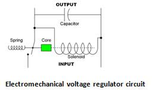
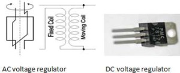

Voltage regulator is a device that maintains a constant voltage level. Based on design variable voltage regulator may be provided with negative feedback loop or with feed forward path. Both ac and dc voltage can be regulated using this voltage regulator. Voltage regulators include electronic components and sometimes it uses electro- mechanical mechanism to operate. DC voltage regulator is available in 3 pin IC. So voltage regulators may be electromechanical regulators or electronic regulator. It may be also classified as ac and dc voltage regulator. Electronic voltage regulator is made with resistors and diodes. Both the components are used in series with one another. Electronic voltage regulators are used in computer power supplies, automobile alternators and power station generator plant.
Electromechanical voltage regulator circuit is provided with a core, spring, solenoid and a capacitor. Here a wire is coiled to make an electromagnet. The magnetic field produced attracts the core by spring action. The current flow produces the field. Regulation quality can be measured by some parameters. Among them two are most important. There are certain other parameters too. Load regulation and line regulation are the most two important parameters. Others are – temperature coefficient, accuracy, dropout voltage, output noise, transient response, etc.
